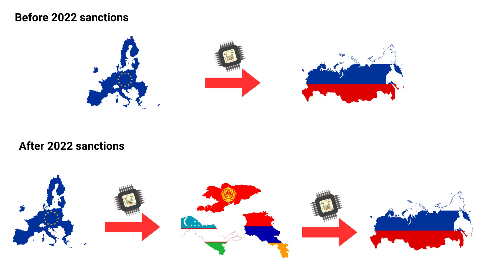
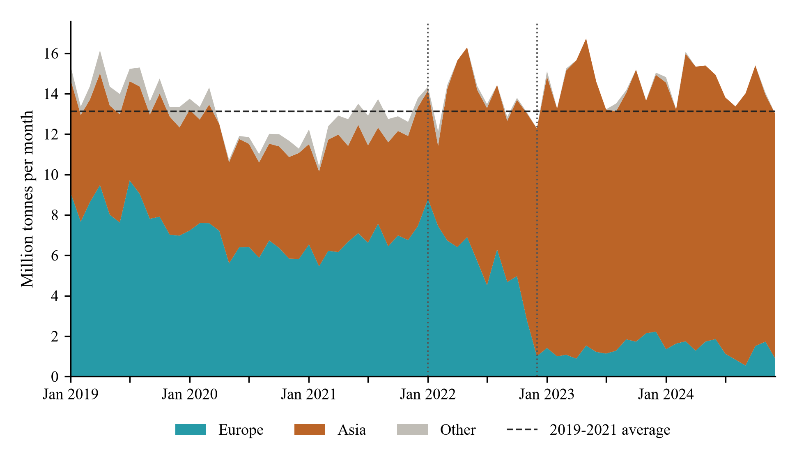

I study how geopolitical shocks reshape international trade, shipping and prices: how sanctions
on Russia are circumvented through third countries and refining loopholes, and what the resulting
rerouting costs in freight, inflation and CO2 emissions. I also work on climate shocks and
urban resilience in pre-industrial Italy. Previously, I was a Visiting Doctoral Researcher at the
London School of Economics.
Research interests
International trade and finance, geopolitical shocks, economic geography, oil shocks,
maritime transport, climate shocks
Sanctions Evasion through Substantial Transformation
Single-authored
Abstract
Origin-based sanctions can be undone by physical transformation: crude oil refined in a third country takes
the origin of the refinery, not of the well. After the 2022 EU embargo, products refined from Russian crude
could therefore enter the European Union legally, until Article 3ma of Regulation (EU) No 833/2014 closed this
loophole in January 2026. Using vessel-level data on crude and product cargoes mapped to individual refineries,
I show that re-origination was concentrated in a handful of refineries in India and Turkey, led by Reliance’s
Jamnagar, which together shipped about 5 million tonnes a year of products made from Russian crude to the EU
in 2023–2025. Exploiting the rule-based closure, I find that the most exposed refineries sharply cut the EU
share of their exports relative to refineries without Russian crude, but only one stopped using Russian crude,
suggesting that the ban mostly redirected their products away from Europe rather than reducing demand for
Russian oil.
Trade Under Sanctions and Diversion
with Giulio Cainelli and Roberto Ganau (University of Padova)
Abstract
We study how EU sanctions on Russia reshaped European exports after the 2014 annexation of Crimea and
the 2022 full-scale invasion. Using a structural gravity model estimated by PPML on quarterly EU-27 exports
by product and destination (2012–2023), we find that sanctions cut EU exports of targeted goods to Russia
by roughly 70%, while Russian counter-sanctions reduced EU agri-food exports by over 80%. Part of this
trade did not disappear but was rerouted: after 2022, EU exports of sanctioned goods to nine transit
economies, from Türkiye and the Caucasus to Central Asia, rose by about 25–35% relative to other
destinations, driven mainly by vehicles, machinery, aircraft and electronics. No such pattern emerged
after the milder 2014 sanctions, and Russian outward FDI shifted toward the same countries after the invasion.

Trade triangulation before and after the 2022 sanctions.
The Hidden Cost of Oil Sanctions: Shipping Rerouting, Inflation, and CO2 Emissions
with Christina Anderl (Bank of England)
Abstract
Western sanctions on Russian crude after the 2022 invasion of Ukraine changed where Russian oil went, not how much
was sold: exports shifted from Europe to more distant buyers in India and China, with no detectable effect on the
world price of crude. Combining a new Oil Rerouting Index (ORI) with a voyage model of more than 5,000 tanker cargoes,
we estimate that the longer routes cost about USD 7 billion in extra shipping and generated 11 million tonnes of
excess CO2 between March 2022 and December 2024, about half of it from the shadow fleet. This collateral cost amounts
to 16–21 cents for every dollar of revenue Russia lost through the wider Urals discount. In a panel of EU countries,
rerouting shocks are associated with increases in fuel and consumer prices well beyond what the extra freight can
explain, running mainly through the euro price of crude and refining margins.

Russian seaborne crude exports by destination, 2019–2024.
Climate Shocks and Urban Resilience in Pre-Industrial Italy
with Giulio Cainelli and Roberto Ganau (University of Padova)
Abstract
We study whether and how climatic shocks and extreme weather events shaped urban development and
resilience in pre-industrial Italy. We build a new city-level dataset from original archival sources
(meteorological registers, municipal records and hospital annals) for Milan, Bologna, Turin and Rome
over 1700–1850, matching monthly temperature and precipitation with population,
births, deaths and disease outbreaks; for Milan, we also observe commodity prices. We identify
extreme weather events with time-series decomposition and anomaly detection, and exploit their sudden,
exogenous nature to estimate their impact on population and demographic dynamics, accounting for
recorded famines and epidemics. Comparing cities across different climates and pre-unification states,
we ask why some urban centres absorbed shocks better than others.
Earlier work
The Energy Consequences of the Russia–Ukraine War: The Case of Italy